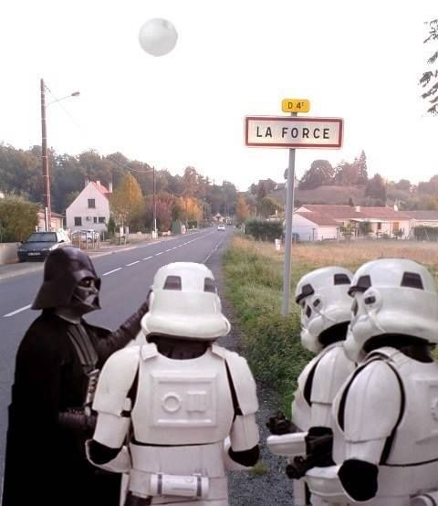
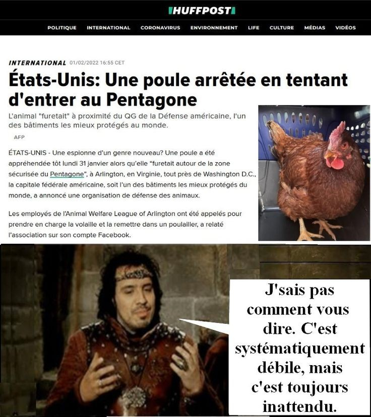

A Paris, une poubelle est considérée comme une arme.
à Chateauneuf-du-Pape, les ovnis sont interdits de survol, d'atterrissage et de décolage.
tous les citoyens se doivent d'avoir chez eux une botte de foin, juste au cas ou le roi passerait avec son cheval.
il est interdit de s'embrasser sur les rails d'un train.
aucune boisson alcoolisée n'est officiellement autorisée sur le lieu de travail. Mis à part la bière, le poiré, le cidre et le vin.
à Laigneville dans l'Oise, il est interdit de mourir chez soi.
Le ketchup est interdit dans les écoles Françaises.
Nota bene: cette loi est justifiée pour défendre les sauces "à la française" et aussi de réduire la mauvaise alimentation.
A Disneyland il est interdit pour les adultes de se déguiser.

Au Royaume-Uni sachez que:
il est illégal d'être ivre à cheval.
il est interdit de porter une armure au sein du Parlement.
il est illégal de transporter une planche de bois sur le trottoir.
il est illégal de ne pas faire la queue dans la billetterie du métro.
il est interdit de causer une explosion nucléaire
se déguiser en soldat est passible d'une amende
dans la ville de York, il est légal de tuer un Ecossais dans l'enceinte de la vieille ville; à condition que celui-ci porte un arc et des flèches
A Chester, les Gallois n'ont pas le droit d'entrer dans la ville avant le lever du soleil et de rester après le coucher du soleil
Tous les hommes au dela de 14 ans doivent pratiquer deux heures de tir à l'arc par jour
Il est illégal de mourir dans les locaux du parlement britanique
les bateaux de la Royal Navy qui entrent dans les ports de Londres doivent donner un tonneau de rhum au gardien de la Tour de Londres
Aux termes des règles visant à limiter l'évasion fiscale (Royaume Uni 2006), il est illégal de dissimuler à un agent du fisc; un élément que l'on souhaiterait lui cacher, alors que l'on n'a pas à lui communiquer des éléments non pertinents à ses yeux.
si vous collez un timbre représentant un membre de la famille royale à l'envers, vous avez de fortes chances d'être accusé de haute trahison.
Dans les USA sachez que:
A Asheville en Caroline du Nord, éternuer dans la rue est illégal.
En Illinois, il n'est pas permis de manger dans un endroit qui brûle.
Au Texas, il est obligatoire de prévenir la victimes 24h avant de commettre un délit.
Au Kentucky une personne est considérée comme sobre tant qu'elle tient encore debout.
En Caroline du sud sachez que:
-un citoyen qui va à l'église doit porter une arme.
-les auberges n'ont pas le droit d'accueillir des chevaux, à moins que ces derniers portent un pantalon.

Dans d'autres pays quelconque du coup...
En Allemagne un oreiller est considéré comme une arme de type passive.
En Allemagne, toujours, il est illégal de tomber en panne sur une autoroute.
En Suisse, il est interdit de tondre sa pelouse le dimanche.
En Alabama, il est interdit de conduire les yeux bandés.
En Israël, les cyclistes qui roulent en vélo éléctrique doivent obligatoirement avoir un permis.
A Toronto, il est interdit de prendre les transports en commun le dimanche si vous avez mangé de l'ail.
A Sarasota en Floride, il est interdit de chanter en maillot de bain.